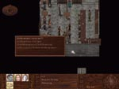
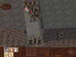

Bar Thugs
| Leather Armor and Ironwood Weapons, 100 drachs |
Background/Summary
Anyone who can shell out 10 drachs for a room can rest their head at the Kaliyan Inn. Expect some unsavory company.
Player's Introduction
When the party first walks into the Kaliyan Inn they will encounter some local ruffians harassing the waitress Larna.
Objectives
Turn a blind eye or help Larna.
Completing Objectives
1) When the party walks in and encounters thugs harassing the waitress they will have the following 4 or 5 options:
|
1.1) . If the party has at least 60 drachs, the leader has a charisma of at least 15, and a speech of at least 11 they will be able to resolve the situation with drinks.
|
1.2) . If the party does this the thugs will leave and later ambush the party in the alley south of the Lusty Strumpet. Once the party has defeated them they can take their armor, weapons and drachs (about 100).
|


|
|
1.3) . If the party has someone with unarmed skill of at least 31 they can win the fight.
|
|
1.4) . They will stick around in the bar and Larna will not give the party the advice.
|
|
1.5) . If the party has done the favor for Dinali he will give Olvo a good butt kicking on the party's behalf.
|
|